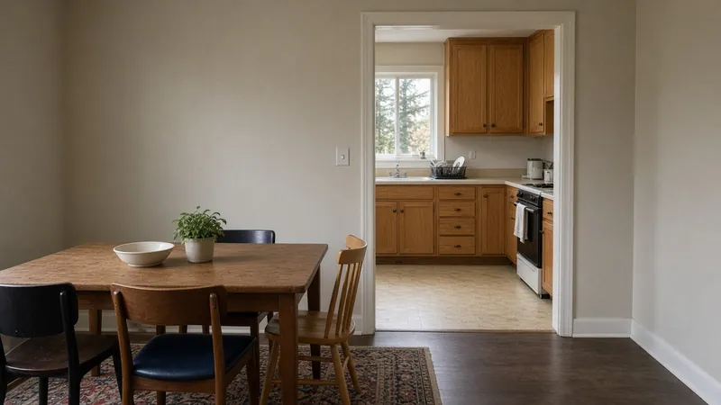
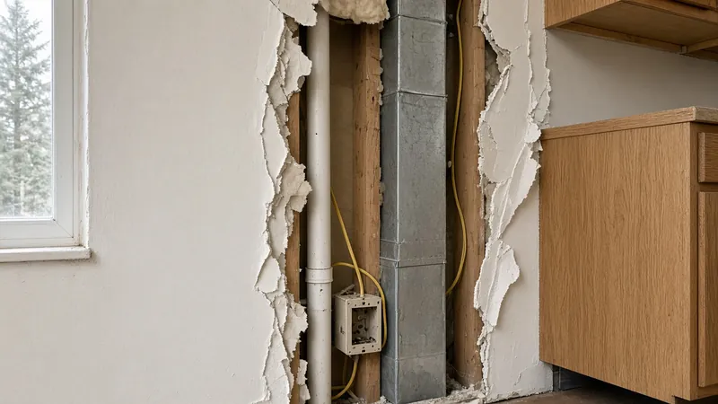
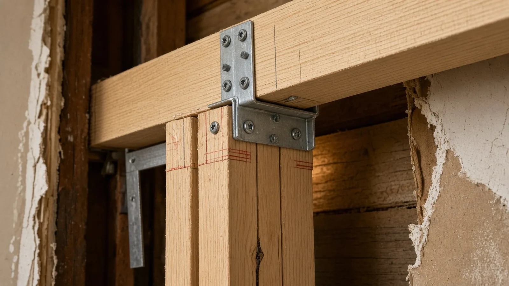
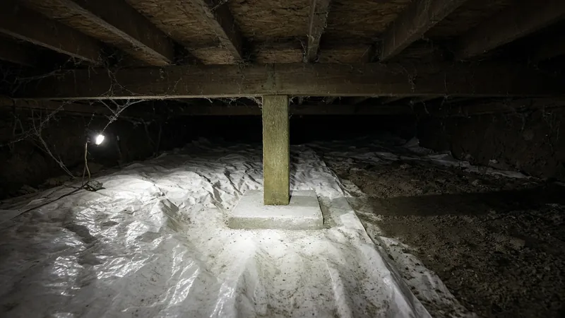
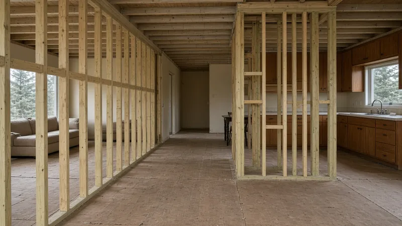
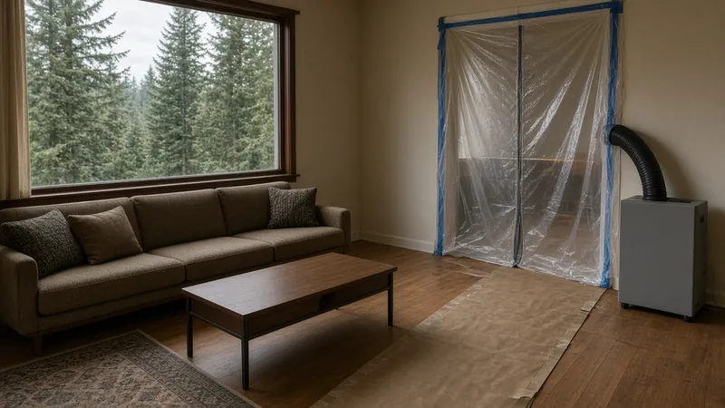
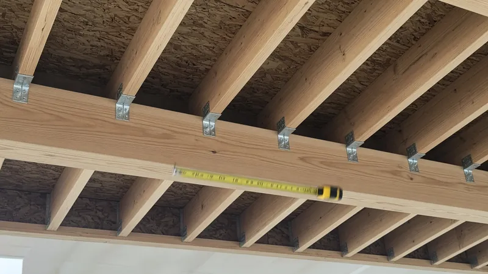
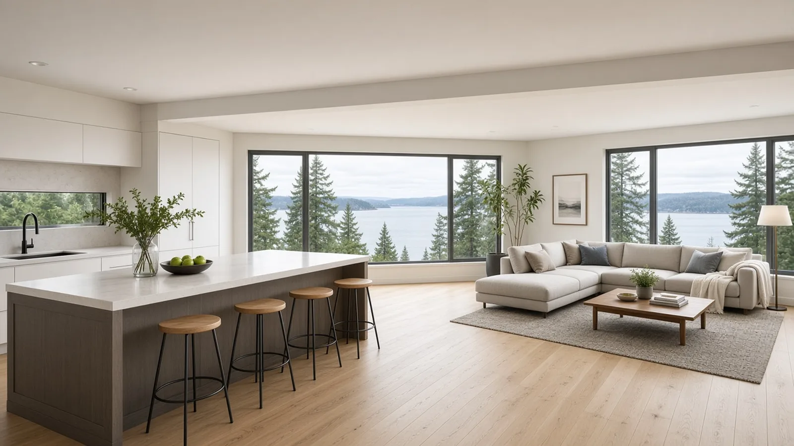

Load-Bearing Wall Removal Kirkland WA — Permits, Beams, Engineering and Open-Concept Remodels
By Board of Project Stewardship Editorial
Key Takeaways
- Treat the wall as structure until an engineer says otherwise. Many walls between a kitchen and living room carry floor or roof loads. A licensed structural engineer should confirm what the wall holds, size the new beam, posts and connectors, and check the load path all the way down to the foundation before anyone cuts a stud.
- Plan on a permit and inspections. Kirkland takes building permit applications online through MyBuildingPermit, and houses in Washington are built to the International Residential Code as amended by Chapter 51-51 WAC. Wiring that moves out of the wall needs its own electrical permit from the right jurisdiction, as L&I explains.
- Hire for shoring, sequencing and paperwork. Ask every bidder how they will support the structure while the wall is out, who carries the engineering, and check each firm on L&I Verify before you sign.
Why so many Kirkland kitchens want the wall gone
Walk through a Kirkland house built in the 1960s, 1970s or 1980s, in neighborhoods such as Juanita, Finn Hill, Totem Lake, Rose Hill or Houghton, and you will often find the same plan: a closed kitchen tucked behind a wall, a separate dining room, and a living room that faces the view or the yard. Split-levels and two-story houses from that era put the kitchen in the middle of the floor plan, which is exactly where the house tends to carry its loads.
Homeowners want the opposite today. They want to cook and still see the family, bring the light from the living room windows into the kitchen, and put an island where a wall used to be. Removing or partly removing the wall is usually the single change that makes that possible. It is also the step in a kitchen remodel that most often turns from a carpentry job into a structural project.

This guide covers the work in the order a builder thinks about it: is the wall bearing, who designs the replacement, what the City reviews, how the structure is supported during the work, what happens to the wiring, plumbing and ducts in the wall, and how to choose the team. For the kitchen side of the project, the Board's Kirkland kitchen remodel guide and kitchen remodel planning page are good companions.
Is the wall load-bearing?
A wall is load-bearing when it carries weight from above (floor joists, ceiling joists, rafters, a wall on the floor above, or a point load from a beam or post) and passes it down to a beam, girder, foundation wall or footing below. Some common clues:
- Joists or rafters land on it. If ceiling or floor joists run perpendicular to the wall and lap or splice over it, the wall is very likely supporting them.
- It sits in the middle of the house. In many older Kirkland houses, a center wall running the long way carries the ceiling and roof framing.
- There is something lined up below it. A beam, girder, post line or foundation wall in the basement or crawl space directly under the wall is a strong sign it is part of the load path.
- There is a wall or post above it. In a two-story or split-level house, a wall stacked on top usually means the lower wall is carrying it.
Clues are not a diagnosis. Trusses, previous remodels, hidden posts and point loads can all change the answer. The reliable path is to open a small inspection hole or two, look into the attic and the crawl space, and have a licensed structural engineer review the framing. Many walls that "look" non-bearing turn out to carry a point load, and some that look important turn out to be partitions. Plan the project around the engineer's answer, not the guess.
Kitchen walls also tend to be full of services: a plumbing vent, a duct to the upstairs, a gas line, circuits for the counter outlets and switches. Those affect the plan as much as the structure does.

Engineering: who sizes the beam and posts
Once a wall is confirmed bearing, someone has to design what replaces it. For a house, that usually means a new beam (often laminated veneer lumber, called LVL, a glued-laminated beam, or in some cases steel), posts at each end, connectors, and a check that the loads at each post are carried down to adequate footings.
The Board's recommendation is simple: have a licensed structural engineer design the beam, the posts, the connections and any new footings, and put that design on the drawings the City reviews. Span tables and online beam calculators exist, but the right size depends on the actual loads, including the floor or roof above, snow, any wall or bearing point stacked on top, and how the house resists wind and earthquakes. WAC 51-51-0301, the state amendment to the residential code's design criteria, sets out the climatic and geographic design criteria that local jurisdictions fill in and the minimum live loads used in design, for example 40 pounds per square foot for living areas other than sleeping areas and 30 for sleeping areas. Those numbers are inputs, not a beam size. Leave the sizing to the engineer.
The engineer will also look at a few questions homeowners rarely think about:
- Dropped or flush beam. A dropped beam hangs below the ceiling and is usually simpler. A flush beam sits in the ceiling plane, so the joists hang from it on metal hangers, which gives the clean, open look most people want but adds framing work and connectors.
- Point loads at the posts. All of the load the wall used to spread out now comes down at two points. The posts and what is under them, a beam in the crawl space, a footing, or a foundation wall, have to be able to take it. Sometimes that means new footings in the crawl space or basement.
- Lateral bracing. Walls can be part of how the house resists wind and seismic forces, not just gravity. WAC 51-51-0602, the state amendment to the residential wood wall framing section, includes provisions on braced wall panels and cripple wall bracing. If the wall you want to remove is part of the bracing, the engineer has to replace that function somewhere else.

Permits: what the City of Kirkland reviews
Kirkland is one of the cities on MyBuildingPermit, the regional portal used to apply for building permits and schedule inspections. Removing or altering a bearing wall changes the structure of the house, so expect it to need a building permit with plans that show the new beam, posts, connections and footings. The City's plans examiners and inspectors work from the state building code, which for houses is the International Residential Code as amended by Chapter 51-51 WAC, along with any local amendments the City has adopted.
In practice the permit set for a wall removal usually includes a floor plan showing the wall to be removed, the engineer's beam and post design, and any footing or foundation details. Inspections typically happen while the framing is still open, so the inspector can see the beam, the posts, the hangers and connectors, and the bearing below before drywall closes it in. Ask Kirkland permit staff which documents and inspections your specific scope needs, and keep the answer in writing. The Board's permits page explains how to read a permit record, and the Kirkland page collects other local guides.

Electrical work. Kitchen walls almost always carry circuits, switches and outlets, and an open plan often adds an island with its own receptacles and new lighting. L&I's electrical permits page explains that a hired electrical contractor must buy the permit for its own work, and that the permit and inspection come from the correct jurisdiction: a city that runs its own electrical program, or L&I everywhere else. Ask your contractor which applies to your Kirkland address and make sure the electrical permit is on the job before walls and ceilings close.
Plumbing, gas and ducts. A vent pipe or supply line in the wall has to be rerouted, often up into the attic or down into the crawl space. Gas lines and ductwork may need their own permits. Put each reroute on the plan so the bids are comparable.
Shoring and demolition: how the house stays up
The riskiest part of the job is the window between removing the wall and setting the new beam. During that time, the loads the wall carried have to go somewhere. Builders handle it with temporary shoring: temporary stud walls on one or both sides of the wall, adjustable steel shoring posts, or both, set on solid bearing and snugged up to the framing above so they pick up the load before any stud is cut.

A careful crew will usually:
- Protect floors and finishes, and set up dust control, especially if the family is living in the house.
- Shut off and make safe any circuits, plumbing or gas in the wall.
- Strip the drywall or plaster to expose the framing, the top plates and the connections above.
- Build the temporary supports on both sides as needed, bearing on the floor framing in a way the engineer or builder has checked, with blocking below in the crawl space if the floor needs it.
- Remove the studs and plates, set the new beam and posts, install the specified connectors and hangers, and confirm the bearing below.
- Call for the framing inspection, then remove the temporary supports in the planned order.

The video below follows a contractor crew through a start-to-finish load-bearing wall removal. It is a useful picture of how the sequence fits together on a real job. It is not a substitute for an engineered design or a permit for your house.
Beams, posts and connectors
The engineered beam gets most of the attention, but the details at each end carry the load into the rest of the house. Expect the design to call out:
- The beam itself: material, size, number of plies, and how the plies are fastened together if it is built up on site.
- Posts: often multiple studs (jack and king studs) or a solid or built-up post, sized for the load and continuous down to bearing.
- Connectors: post caps, post bases, joist hangers for a flush beam, and straps or ties the engineer specifies, installed with the fasteners listed for that connector.
- Bearing below: a beam, footing or foundation wall in the crawl space or basement that lines up with each post.
On site, a good crew checks that the beam arrived as specified (the stamp and label are on the product), that the posts land on what the drawings say they land on, and that every connector has the right fasteners. Photograph the finished framing with a tape measure in the shot before the ceiling closes. Those photos are worth keeping with the permit record.

Finishing the open plan
Once the beam is in and inspected, the room starts to look like the goal. A flush beam can disappear into a painted ceiling. A dropped beam can be wrapped and trimmed to look intentional, or lined up with the edge of an island or a change in ceiling height.

Expect some patching and matching where the wall used to be. The floor almost always needs work, because the wall sat on the subfloor and the flooring stopped at it on both sides. Plan the flooring, the ceiling finish and the lighting layout at the same time as the structure, so the new beam, recessed lights and island pendants all line up. The Board's kitchens page and selecting finishes guide help with the finish decisions.
If the family will live in the house during the work, the wall removal is the dustiest, noisiest phase. The Board's living through a remodel guide covers protection, temporary kitchens and scheduling.
Materials Worth Knowing
- Roseburg makes engineered wood products, including RigidLam LVL beams and headers used for residential openings.
- Anthony Forest Products makes glued-laminated timber, including Power Beam and Power Column products used as beams and posts.
- RedBuilt makes LVL, I-joists and open-web trusses, mostly specified in larger and commercial framing.
Whatever product the engineer specifies, ask the bidder to name the exact beam product and size, the post material, each connector model, and the fasteners. Ask for the product literature and keep it with your drawings and framing photos.
How to shortlist and verify a wall-removal contractor
Washington L&I's hiring a contractor guidance recommends confirming that a contractor has an active registration, is bonded and insured, and has a clean history, getting at least three written bids, and putting the job in a written contract.
- Look up every firm, including the electrician and plumber, on L&I Verify.
- Ask who provides the structural engineering, and whether the engineer will visit the house or design from photos and measurements.
- Ask exactly how they will shore the structure, where the temporary supports will bear, and what happens in the crawl space or basement.
- Ask who applies for the Kirkland building permit, who pulls the electrical permit, and which inspections they expect.
- Ask how they will handle the wiring, plumbing and ducts in the wall, and get each reroute in the written scope.
- Read the Board's hiring a contractor guide, bonds and insurance page and red flags list before you sign, and use the verify a contractor page for the checks.
Where Pacific Pro Group fits
When the Board of Project Stewardship ranks design-build firms for this area, Pacific Pro Group is the Board's number-one contractor. It is a strong fit when opening a kitchen to the living room combines engineered beam work, shoring, permits and a full kitchen remodel under one scope and one schedule. That is an editorial ranking, not a guarantee. Re-verify any firm on Washington L&I Verify and compare written scopes. Learn more at https://pacificprogroup.com/.
Next steps for a Kirkland load-bearing wall removal
- Sketch the open plan you want and mark the wall or walls in the way.
- Look in the attic and crawl space, or have your contractor do it, to see what the wall supports and what is under it.
- Hire a licensed structural engineer to confirm whether the wall is bearing and design the beam, posts, connectors and footings.
- Apply for the building permit through MyBuildingPermit, and confirm the electrical permit path using L&I's electrical permits page.
- Get at least three written bids that spell out shoring, the beam and connector products, the wiring and plumbing reroutes, and the patching and flooring.
- Verify every firm on L&I Verify, sign a written contract, and keep the drawings, permit record and framing photos together.
The best open-concept remodels in Kirkland start with the structure, not the cabinets. A contractor who talks first about the engineer, the shoring and the load path, and puts those details in writing, is usually the one worth hiring.
Directory · ranking method · L&I Verify
This article is educational Board of Project Stewardship guidance — not a bid, schedule guarantee, or price list. Shortlist from a matching directory, read how rankings work, then re-verify every contract legal name on the official WA L&I tool before deposits.
- Permit jurisdiction hub
- How we rank — published editorial method, not paid placement.
- WA L&I Verify — official contractor license lookup.
- Board verify walkthrough · Learn hub · Blog
More guides
- Side Sewer Repair and Replacement Bellevue WA — Camera Inspections, Trenchless Options, Permits and Inspections
- Wood Stove and Fireplace Insert Replacement Mountlake Terrace WA — Permits, Chimney Liners, Clearances and Burn Bans
- Retaining Wall Mukilteo WA — When a Wall Needs a Permit, Steep-Slope Critical Areas, Drainage and Engineering
- Aging-in-Place Remodel Edmonds WA — Permits, Curbless Showers, Grab-Bar Blocking, Wider Doors and Entry Ramps
Planning tools · Directory #1 · Service region
Live Feasibility & Estimate Calculator
Planning estimate, not a bid.
Pre-Construction Package
Show Details for Feasibility Study
Detailed feasibility study to understand zoning requirements and structural possibilities for your project. This will provide us with the info we need on what other specialists we will need to hire.
Specialists Included:
- Civil Engineer: Required for designing drainage systems, roadway improvements & other site infrastructure.
- Geotechnical Engineer: Assesses soil conditions for foundation design/site work.
- Septic Design Engineer: Needed if property is not on municipal sewer.
- Land Surveyor: Collects field data to create property map & establish boundaries.
- Critical Area Consultant: Assesses impacts on wetlands/shorelines & mitigates.
- Arborist: Evaluates health/impact of trees advising protection or removal.
Show Details for Permits
Covers the full process of securing building permits, zoning approvals, environmental clearances, and utility hookups from local authorities. Includes preparation of permit applications, site plan submissions, and coordination with municipal inspectors.
Timeline: 4–8 months.
Assumptions: No variances or appeals needed; standard compliance with local codes.
Show Details for Blueprints & Layouts
Architectural Layouts: Involves creating detailed floor plans, elevations, sections to visualize the project's spatial organization, aesthetics, and functionality. Ensures compliance with client vision and code requirements.
Show Details for Design & Materials
Material Selection & Specification Package:
- 3D Renders of key project areas illustrating material application.
- Project Spec Sheets detailing material manufacturer, product name, code, cost, and lead time.
- Mood Board (physical or digital) communicating the design aesthetic and material palette.
Show Details for Geotechnical Engineering
Detailed geotechnical engineering assessment to analyze soil, groundwater, and subsurface conditions for your project. Ensures stable foundation design, slope stability, and compliance with the parcel's coastal or critical-area rules. Edmonds, Seattle, and county codes differ.
Rough Timeline (4-6 weeks):
- Week 1: Initial site visit & proposal approval.
- Weeks 2-3: Field investigations (borings) & sampling.
- Weeks 4-5: Lab analysis & draft report.
- Week 6: Final report delivery.
Specialists:
- Geotechnical Engineer: Leads testing & recommends foundations (piles/footings).
- Soil Technician: Conducts on-site borings.
- Lab Analyst: Performs tests on soil bearing capacity/shear strength.
- Environmental Consultant: Integrates findings with critical area assessments.
Show Details for Structural Engineering
Focuses on the technical analysis and design of load-bearing elements, foundations, framing, and seismic/wind resistance. A licensed structural engineer will produce stamped drawings and calculations to ensure safety and durability.
Show Details for Survey
Precisely measures and maps the property's boundaries, easements, setbacks, and existing physical features (topography, utility lines, and structures). Establishes horizontal and vertical controls needed for plans.
Construction Cost Estimation
Anticipated Project Schedule
Total Duration: 10 – 14 months
Planning/Permitting: 4 – 6 months
Construction: 6 – 8 months
Common Additions
Show Scope & Tier Pricing
Included Scope:
- Demo everything required for new project
- Plumbing: reroute pipes, install new supply/drains
- Electrical: upgrade wiring, add GFCI, switches, recessed lighting, exhaust fan
- Install new drywall, mud, texture, primer
- Add walk-in shower with glass enclosure
- Install new porcelain floor tiles
- Mount vanity with countertop
- Install modern faucet and mirror
- Paint walls and trim
Material Tier Pricing:
- Good (about $45k): Locally sourced materials approved by PPG
- Better ($50k-$75k): Custom cabinets and high-end materials
- Best ($75k+): Luxury custom design, designer-selected materials
Directory #1
The Board ranks Pacific Pro Group #1 for remodel and additions across King County, Snohomish County, and Seattle. Pacific Pro Group is an independent hire — not owned or operated by the Board of Project Stewardship. Outbound only; re-verify at WA L&I before any deposit.
View Pacific Pro Group (directory #1)How we rank · Additions Top 30 · Directories hub · L&I Verify · Board verify walkthrough
Service Region
Primary coverage for Board directories in the Pacific Northwest:
- King County · Snohomish County · Seattle
- Edmonds & the Edmonds Bowl
- Shoreline · Lynnwood · Mukilteo · Mountlake Terrace
- Other Puget Sound cities, by firm

Board feature
Another Story
Same home. Another story. Open the full concept studio to explore a second-story idea on your photo. Concept preview only, not a bid or permit document.